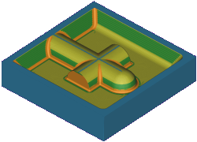

In the Program Order view of the Operation Navigator, right-click 1234 and choose Tool Path→Verify.
The Tool Path Visualization dialog box is displayed.
Click the 2D Dynamic tab.
Click Play .
Click OK to close the message box.
The Blank Geometry dialog box is displayed.
Make sure that Type is set to Bounding Block and click OK.

Click OK to close the Tool Path Visualization dialog box.
Close the part without saving it.